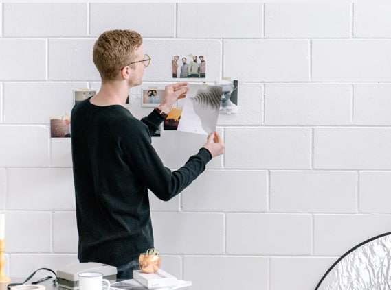
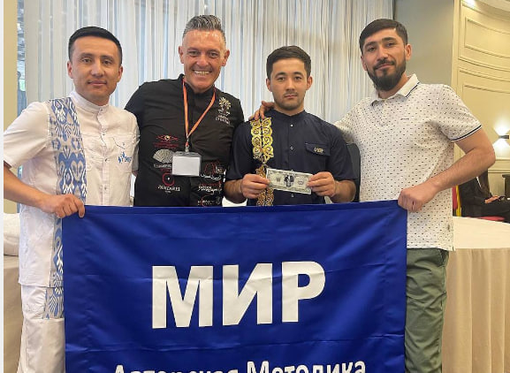
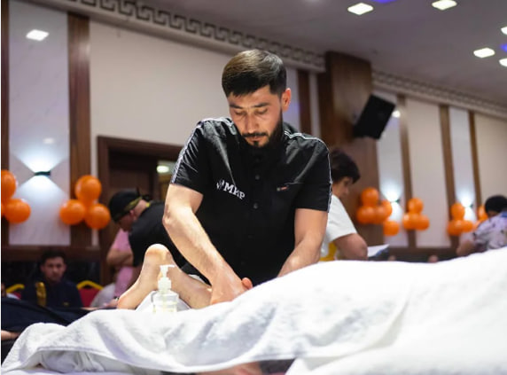
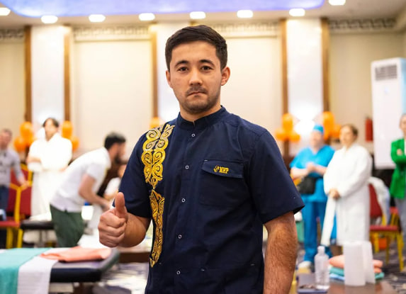
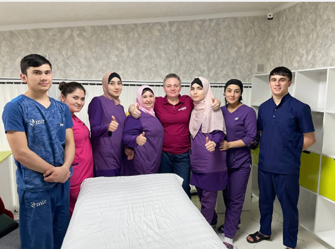

О системе МИР
Международная система восстановления здоровья: клиники лечения и академия подготовки специалистов

О компании
МИР — это международная система восстановления здоровья, объединяющая клиники лечения и академию подготовки специалистов.
Система МИР основана на комплексном подходе к организму и объединяет 16 лечебных методик и 6 диагностических протоколов. Методика рассматривает организм как единую систему и помогает выявить первопричину заболевания, а не только его симптомы.
МИР — это не просто сеть клиник и не просто обучение. Это экосистема восстановления здоровья, где человек может восстановить здоровье, освоить новую профессию и открыть собственную практику.
Наша миссия — помогать людям возвращать здоровье и полноценную жизнь через системную работу с организмом.
Наша история
Система МИР выросла из практической работы с пациентами и обучения специалистов в Ташкенте и других городах. Первые клиники и образовательные программы были созданы на базе школы массажа и реабилитации, а затем оформились в единую международную систему.
Сегодня МИР объединяет клиники, которые помогают людям восстанавливать здоровье, и академию, которая готовит специалистов по восстановлению организма.
Основатель системы
Доктор Мирхаджиев Миркамил Миркадирович
- Основатель сети медицинских клиник МИР
- Президент Международной Академии Массажного Искусства МИР
- Президент Central Asian Halal Medical Association
- Магистр медицинского массажа
Доктор Миркамиль — чемпион Средней Азии и Евразии по медицинскому массажу. Он является автором уникальной методики восстановления здоровья МИР и имеет более 20 лет опыта в медицинском массаже и реабилитации.
За годы практики доктор Миркамиль помог десяткам тысяч пациентов восстановить здоровье и подготовил более 4500 специалистов.
доктор Миркамиль
Методика МИР
Методика МИР — это комплексная система восстановления организма.
Она объединяет:
- восточную медицину
- советские школы медицинского массажа
- мануальные техники
- висцеральную терапию
- тибетские и китайские практики
- современные методы реабилитации
В основе методики лежат три принципа:
- выявление первопричины заболевания
- восстановление фундаментальных систем организма
- запуск естественных процессов саморегуляции
В системе используется 16 лечебных методик и 6 диагностических протоколов. Такой подход позволяет работать со сложными случаями и восстанавливать организм без лекарств и операций.
Лечение
Клиники МИР специализируются на комплексном восстановлении организма. Мы работаем с такими состояниями как:
- грыжи и протрузии
- панические атаки
- бессонница
- давление
- невралгии
- сколиоз
- мигрени
- последствия инсульта
- хронические боли
- нарушения работы внутренних органов
Лечение строится на основе глубокой диагностики и комплексных протоколов восстановления, которые учитывают состояние всего организма.
в клиниках восстановления здоровья
Обучение
Академия МИР обучает специалистов по восстановлению организма.
Обучение включает:
- 16 лечебных методик
- 6 диагностических систем
- практику на реальных пациентах
Программа готовит специалистов, которые умеют не просто делать массаж, а диагностировать нарушения в организме и работать с причиной заболеваний.
После обучения выпускники могут начать профессиональную практику и работать в любой стране.
подготовка специалистов по восстановлению организма
Наши преподаватели
Опытные практики с многолетним стажем

Рустам Каримов
Главный преподаватель. 15 лет практики. Специализация: классический и медицинский массаж. Автор методики МИР.
Азиза Норматова
Преподаватель медицинского массажа. Реабилитолог. 12 лет в профессии. Работала в клиниках Ташкента.

Нигора Юсупова
Преподаватель детского массажа. 10 лет в детской поликлинике Юнусабадского района.
Галерея
Наши занятия и мероприятия


Сертификаты и лицензии
Работаем в соответствии с законодательством Узбекистана